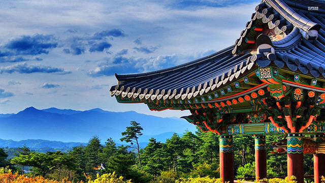
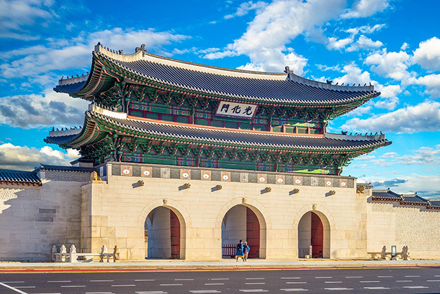
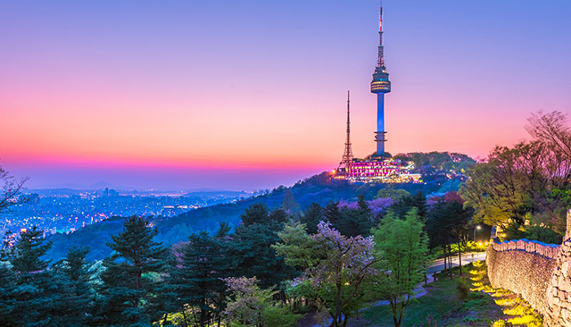
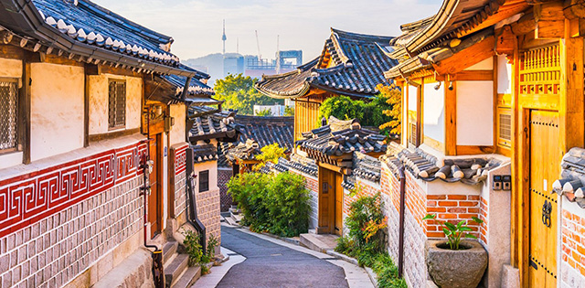
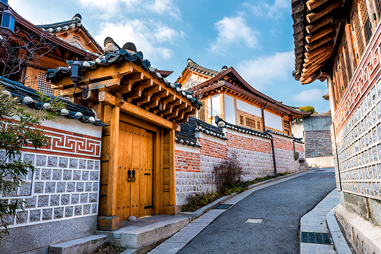

HISTORY
연혁
2001 - 현재
2001
- 2019
2019외래관광객 1,750만명 돌파 - 2018
｢공공기관 운영에 관한 법률｣에 의거 '준정부기관'으로 기관유형 분류 - 2016
외래관광객 1,700만명 돌파 - 2014
외래관광객 1,400만명 돌파
본사 원주 이전 - 2012
외래관광객 1,100만명 돌파 - 2010
2010-2012 한국방문의 해 - 2009
정부경영평가 공기업 2군 1위 - 2008
공사 영문 명칭 변경 (KNTO → KTO) - 2006
금강산 지사 신설 - 2005
공사CI변경
그랜드코리아레저(자회사) 설립 - 2004
PATA 총회 개최, 투자유치센터 개소 - 2003
금강산 육로관광 개시 - 2002
월드컵 및 아시안게임 관광기획단 운영 - 2001
공사 면세점 인천공항으로 이전
2000 - 1991
1991
- 2000
외래관광객 500만명 돌파 - 1999
경주관광교육원 폐쇄 - 1998
외래관광객 400만 명 유치 (425 만 명) - 1997
주문진 가족호텔 건설, 운영 - 1996
한국관광공사 영문 명칭 변경(KNTC → KNTO) - 1995
서남관광개발공사 흡수 합병 - 1994
한국 방문의 해 행사 개최
(서울 정도 600주년 기념 행사 등 총 318개 이벤트)
PATA 3대 행사 개최
(연차총회, 관광교역전, 세계지부회의) - 1993
대전 엑스포 행사 지원
서남관광개발공사(자회사) 설립 - 1991
외래 관광객 300만 명 유치(320만 명)
해남 화원관광단지 개발 계획 수립
1990 - 1981
1981
- 1989
제주관광개발공사 흡수 합병 - 1988
외래관광객 200만 명 유치(234만 명)
88 올림픽의 성공적 개최에 기여
(홍보 및 행사 진행 분야) - 1986
관광안내전시관(TIC) 개관
86아시안게임의 성공적 개최에 기여
(홍보 및 행사 진행 분야) - 1983
ASTA 총회 개최 - 1982
‘한국관광공사’로 명칭 변경
제주 중문관광단지 개발 착수
1980 - 1971
1971
- 1980
제주관광개발공사(자회사) 설립
중문관광단지 개발 계획 착수 - 1979
PATA 총회 개최
해외조직망 확대(’69년 1개소 -> ’70년 9개소) - 1978
외래관광객 100만 명 유치(108만 명) - 1977
관광불편신고센터 설치, 운영
경주호텔학교(경주관광교육원) 개설 - 1975
경주관광개발공사(자회사) 설립 - 1973
설악동 관광단지 개발 착수 - 1971
경주 보문관광단지 개발 착수
1970 - 1961
1961
- 1969
호텔학교 개설 - 1979
외래관광객 10만 명 유치(10만 3천 명)) - 1978
국제관광공사(현 한국관광공사) 설립
호텔(워커힐, 반도, 타워, 조선 등), 아리랑택시,
대한여행사 등 직영, 관광공사원 자격제도 시행 - 1977
관광진흥법 제정